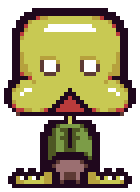
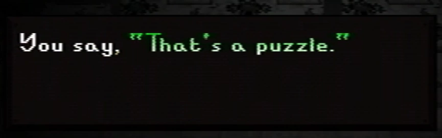

Petscop (game)
{kind=link}
Fan recreation of Petscop's in-universe logo
- This article is about the Petscop game itself, as presented in-universe. For information about the series, see Petscop. For other uses, see Petscop (disambiguation).
Petscop is an unreleased game, apparently developed in 1997 for the PlayStation by a company named Garalina. The game was never finished and was never released to the public.
Gameplay
{kind=link}

{kind=link}
The guardian.
The player controls a character referred to as the guardian.
The pause menu can be activated at most times during gameplay. In the pause menu, there are selections for resuming the game, options, viewing details on caught Pets, the Book of Baby Names, and quitting the game.
Gift Plane
- Main article: Gift Plane
When starting a new file, the game starts the player in the Gift Plane. According to a sign near this starting location, Petscop was intended to have 8 homes (levels) and 48 total Pets to find. However, there is only one level - Even Care - with only 5 Pets available. Pets are caught by walking over them, but a puzzle must be solved to be able to reach them. After entering a button combination in Roneth's room, which Paul learned about from a note that came with the game, exiting Even Care leads the player into the Newmaker Plane.
Newmaker Plane
- Main article: Newmaker Plane
The Newmaker Plane is a large region with many different areas, both on the surface and underground. This part of the game is seemingly addressed to various different people to discuss events that took place outside of the game, in relation to the family involved in the series' story.
Functionality
|
This section of the article is incomplete. If you have information, you can help add to this section. |
Recordings
- Main article: Recording
While playing Petscop, the player's inputs are recorded and stored by the game. If the player idles at the title screen, these recordings may be replayed as demos. In some cases, the conditions of the game will be changed during playback, causing things to occur differently than when the recording was originally created. Recordings can be played directly through a secret menu.
Players
- Main article: Players
On multiple occasions, it is implied that multiple players are playing Petscop at the same time, or are viewing other players' recordings playing back during their play session. There are different ways players can communicate with each other.
Intended audience
- This section is about the in-universe intended viewers of the game. For discussion regarding the out-of-universe audience of the series, see Petscop.
The "intended audience" refers to the in-universe intended players or recipients of the game Petscop.
There are several people or groups of people whom the game seems to address directly throughout the game, either through recording playback or text shown in game. These often address someone as "You". Most of these appear to be from Rainer, the presumed creator of the game.
Marvin
{kind=link}

{kind=link}
Part of the message in Care's room, with Marvin's green text
Marvin appears to be the primary character for whom the Newmaker Plane and its mysteries were originally created.[1] In his messages, Rainer is frequently suspicious towards him, occasionally accusing him of crimes.
The first time that the game directly addressing someone is shown by the videos is in Petscop 3, when Paul finds a note in Care's room in the Child Library aimed at Marvin.
In Petscop 20, while Marvin's recordings are played, he is addressed through dialogue boxes by Rainer as he is questioned about a grave and Care. He is later more directly addressed when viewing the caskets.
Belle
The second character to be addressed directly is Belle in Petscop 12's recordings. She is talked to through dialogue messages after she is freed from the Quitter's Room and explores the Newmaker Plane. The messages to her seem equal parts cheerful and admonishing.
Care
The third character addressed directly is Care (addressed by her full name, Carrie Mark), during Petscop 17, when a text box inquires about what happened to her on November 11th of 1997.
The family
The family, which is suggested to also include some of the channel managers, appears to be the intended audience for at least part of the game, most notably seen in Petscop 11. The description of Care A located in the House specifically mentions "I told you all, when Care A goes missing, she goes missing forever". The "you all" refers to a group of people, instead of an individual.
Gallery
{kind=link}
Theories
The text within the Book of Baby Names suggests that Petscop was play-tested by a number of different people, who were later credited as "Petscop Kids", and had their recordings stored on the game's CD. The office on the school's third floor may indicate that this testing occurred at the school.